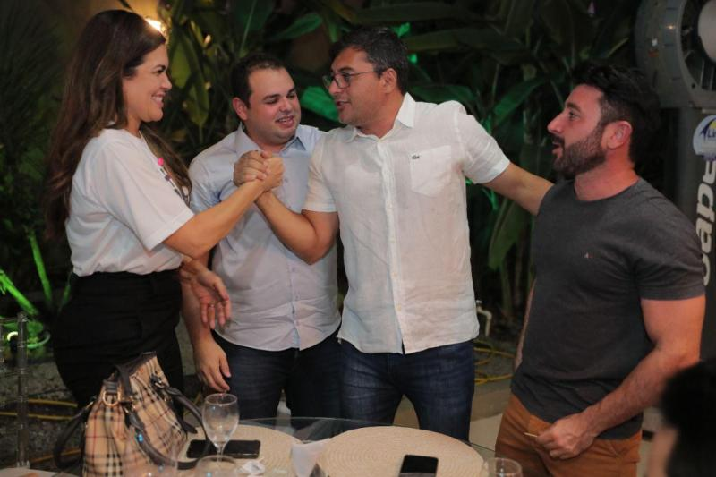
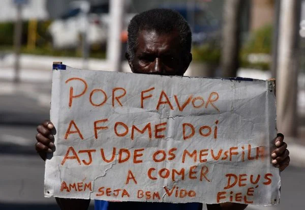

Amazonas
Wilson reúne deputados eleitos e reeleitos para parabenizá-los
O candidato à reeleição para o Governo do Amazonas, Wilson Lima reuniu, nesta terça-feira (04/10), 22 deputados federais e estaduais eleitos e reeleitos.
Brasil
Bolsonaro vai passar a faixa para Lula?
Ainda não se sabe quem será o responsável por passar a faixa ao petista, mas Bolsonaro decidiu acabar com a tradição, já que, historicamente, o responsável por tal ato é o lula.
América Latina
Fome até 2030, diz ONU
Fome atinge 56,5 milhões de pessoas na América Latina e no Caribe, 13,2 milhões a mais do que em 2019
ler mais...
Política Mundial
Zelensky pede que mundo aja para parar a guerra
O presidente ucranian pediu nesta terça-feira ao Conselho de Segurança da ONU que acabe com os "crimes de guerra" contra civis ucranianos ...